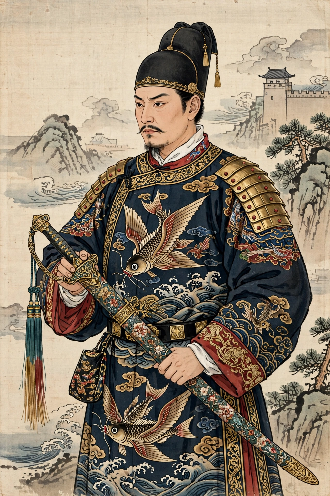

The Embroidered Uniform Guard (錦衣衛, Jǐnyīwèi) was the imperial secret police and paramilitary bodyguard of the emperors of China's Ming dynasty. Founded in 1382 by the Hongwu Emperor (Zhu Yuanzhang), the Jinyiwei served as the emperor's personal sword arm — guarding the palace, conducting espionage and arrests, and running the feared imperial prison — until the fall of the dynasty in 1644.
 | |
| Active | 1382 – 1644 |
|---|---|
| Country | Ming dynasty, China |
| Role | Imperial bodyguard, secret police, intelligence |
| Garrison | Beijing (Northern Division) |
The unit originated as the Hongwu Emperor's ceremonial guard corps (the Yiluan Si, established 1360) and was reorganised as the Jinyiwei in 1382. Its officers wore distinctive brocade uniforms (including the famous feiyu "flying fish" pattern granted by imperial favour) and carried the "embroidered spring sword" (xiuchundao). Answerable only to the emperor, the Guard could arrest, interrogate and punish anyone, including nobles and officials, without recourse to the regular judiciary.
Although Hongwu curtailed some of its powers after abuses in the 1380s–90s, the Jinyiwei remained a central instrument of imperial surveillance throughout the dynasty, later working alongside — and sometimes competing with — the eunuch-run Eastern Depot (Dongchang), founded in 1420. At its height the Guard numbered perhaps 14,000–16,000 men. It vanished with the Ming collapse in 1644, though the Qing briefly revived the name before abolishing it.
The Jinyiwei feature prominently in wuxia fiction and in films such as Secret Service of the Imperial Court (1984) and 14 Blades (2010), usually depicted as ruthless imperial enforcers.
From Wikipedia, the free encyclopedia.